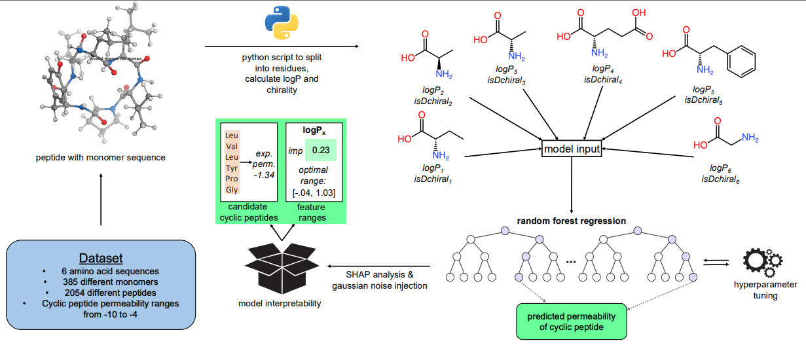

This project predicts membrane permeability of cyclic hexapeptides using machine learning based on monomer LogP descriptors and chirality features. Utilizing data from the Cyclic Peptide Membrane Permeability Database (CycPeptMPDB), we developed a Random Forest model that achieves strong predictive performance (\(R^2 = 0.779\), RMSE \(= 0.359\)). Beyond prediction, the framework enables rational design of cell-penetrating peptides by allowing users to specify positional constraints and target permeabilities, then generating viable monomer candidates that satisfy these criteria.
The framework enables rational peptide engineering through a constraint-based optimization pipeline. Users specify:
Design Pipeline:
Step 1 – Feature space exploration: Generate 20,000 candidates through bootstrapping with Gaussian noise injection:
\[ \mathbf{X}'_{\text{LogP}} = \mathbf{X}_{\text{LogP}}^{\text{boot}} + \alpha \cdot (\boldsymbol{\varepsilon} \odot \boldsymbol{\sigma}) \]
where \(\mathbf{X}_{\text{LogP}}^{\text{boot}} \in \mathbb{R}^{20000 \times 6}\) is resampled from the training set, \(\varepsilon_{ij} \sim \mathcal{N}(0, 1)\) adds positional variability, \(\boldsymbol{\sigma}\) scales noise by feature standard deviation, and \(\alpha = 0.5\) controls perturbation intensity.
Step 2 – Apply constraints: User-defined LogP and chirality constraints are enforced at each of the six positions. Values outside specified ranges are clamped to boundaries; discrete values override all samples at that position.
Step 3 – Permeability filtering: The model predicts permeability for all candidates, retaining only those within tolerance of the target:
\[ \mathbf{X}_{\text{filtered}} = \{\mathbf{x}'_i \mid |\hat{y}(\mathbf{x}'_i) - y_{\text{target}}| \leq \varepsilon\} \]
Step 4 – Candidate generation: For each residue position, the framework outputs:
This allows chemists to identify specific amino acids that satisfy both structural constraints (e.g., cyclization requirements) and functional goals (membrane permeability for cellular uptake).